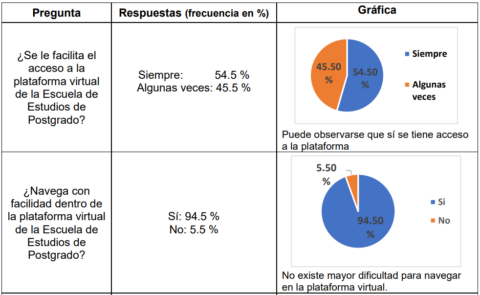
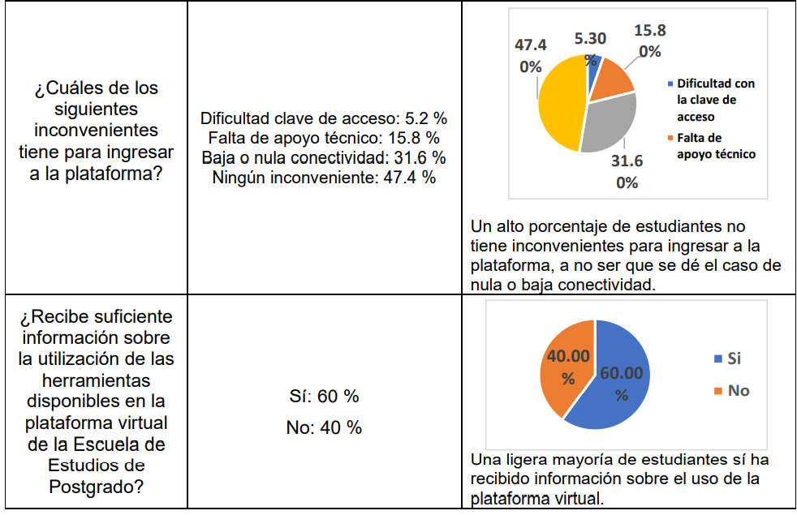
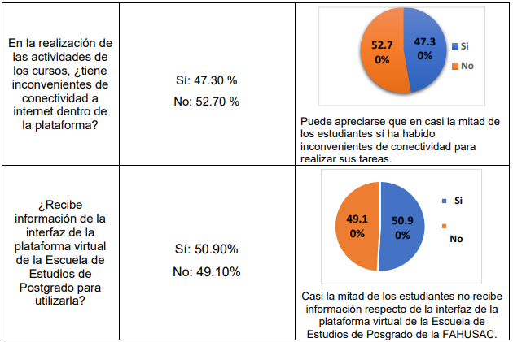

Artículo 5 Accesibilidad en uso de plataforma virtual en la Escuela de Postgrado, FAHUSAC
5.1 Resumen
En esta época en que debido a la crisis sanitaria se deben superar todos los obstáculos para consolidar la educación superior, surge la interrogante: ¿cuáles son las condiciones y facilidades de acceso a la plataforma virtual que han tenido los estudiantes de las diferentes maestrías de la Escuela de Estudios de Posgrado de la Facultad de Humanidades en el primer semestre del año 2020? Con base en esa inquietud se realizó una investigación no experimental, transeccional, relacionada con el área tecnológica, que permitió recabar datos de índole personal, social, económica, laboral y cultural, respecto de las condiciones de accesibilidad y uso de la plataforma virtual a la cual pueden ingresar los estudiantes. La técnica utilizada para la recolección de la información fue la encuesta; esta fue compartida a través de formulario de Google, con una muestra 112 estudiantes del primer ciclo de las diferentes carreras de maestrías que ofrece la Escuela de Estudios de Postgrado, la cual fue seleccionada para el estudio en mención.
Los resultados indicaron que un 40 % de estudiantes no recibe suficiente información sobre la utilización de las herramientas disponibles en la plataforma virtual de la Escuela de Estudios de Postgrado, y un 49 % que no reciben información de la interfaz de la plataforma virtual de la misma Escuela.
Se elaboró una guía sobre la utilización de la plataforma virtual de la Escuela de Postgrado, considerando el contexto de la escuela y la plataforma institucional para lograr su pertinencia con el uso de las herramientas de las que pueden disponer los estudiantes de los diferentes programas de maestrías que ofrece la Escuela de Estudios de Postgrado.
5.2 Introducción
El uso de las nuevas tecnologías informáticas de comunicación -TIC-, permite acortar distancias, y atender de diferentes modalidades a los sujetos; en el ámbito educativo, en las plataformas virtuales, se dispone de una serie de recursos y actividades que permiten desarrollar el proceso de enseñanza aprendizaje. Al revisar teoría relacionada con la educación virtual, pudo apreciarse la incidencia en definirla como una estrategia educativa que facilita el manejo de la información y permite la aplicación de nuevos métodos pedagógicos enfocados al desarrollo de aprendizajes significativos, los cuales están centrados en el estudiante y en su participación dinámica (Enciclopedia Cubana en la Red [EcuRed], 2019).
5.3 Artículo
Los programas de Maestría son impartidos en las modalidades e-learning y b-learning a través de plataforma Moodle. Actualmente hay bastantes ventajas con el uso de herramientas digitales para acortar distancias de comunicación que favorezcan el desarrollo personal y profesional. En el contexto de la Escuela de Postgrado de la Facultad de Humanidades, con estas herramientas se privilegia la atención en docencia en modalidad virtual utilizando diferentes dispositivos, acceso a la información en tiempo y forma, y facilidad de ingreso en cualquier lugar y espacio. Sin embargo, se ha observado que los estudiantes presentan una serie de dificultades de accesibilidad a la plataforma, así como, en la utilización de los recursos y actividades disponibles en la misma; situación que repercute negativamente en su proceso de aprendizaje. Asimismo, las Tecnologías de la Información y Comunicación -TIC-, son tecnologias que han beneficiado a los estudiantes y docentes porque acortan distancias y tiempo, obteniendo como resultado el acceso de la información para realizar las actividades de forma virtual a través de la plataforma de la Escuela de Postgrado. Por lo antes, expuesto surgió la interrogante ¿Cuáles son las condiciones y facilidades de acceso a la plataforma virtual, que tienen los estudiantes de Maestría en Currículum, Maestría en Docencia Universitaria, Maestría en Docencia Universitaria con Énfasis en Tecnologías y Maestría en Investigación, en el plan de los días sábado y domingo y en modalidad virtual, en la accesibilidad, utilización de los recursos y actividades de la plataforma Moodle de la Escuela de Estudios de Postgrado de la Facultad de Humanidades, en el primer semestre del 2020.
Los programas de aprendizaje llevados en modalidad virtual se utilizan en todos los niveles educativos y especialmente en la educación superior. La Escuela de Estudios de Postgrado de la Facultad de Humanidades sirve programas de maestría y doctorado en modalidad semipresencial, es decir b-learning. De acuerdo con Ruiz (2011), la definición de las variantes de modalidad virtual se resume en:
El blended learning (b-Learning) sigue avanzando en el contexto internacional como una alternativa frente a la modalidad de la educación completamente virtual (e-Learning) como una opción de mejoramiento de la calidad de la instrucción respecto de la modalidad de educación tradicional, tanto presencial como a distancia y la formación laboral corporativa. (p. 11)
La importancia del presente estudio radica en los datos que se obtuvieron en las áreas de índole personal, social, económico, laboral y cultural, relacionados con el área tecnológica, sobre las condiciones de accesibilidad y uso de la plataforma virtual que presentan los estudiantes. El objetivo general de la investigación se centró en identificar las condiciones y accesibilidad a la plataforma virtual, que tienen los estudiantes de Maestría en Currículum, Maestría en Docencia Universitaria, Maestría en Docencia Universitaria con Énfasis en Tecnologías y Maestría en Investigación, en el plan de estudio de los días sábado y domingo, y en modalidad virtual de la Escuela de Estudios de Postgrado, Facultad de Humanidades, en el primer semestre del 2020.
Los objetivos específicos se enfocaron en:
Establecer los requisitos básicos de conectividad a la plataforma virtual que tienen los estudiantes de los programas de objeto de estudio de la Escuela de Estudios de Postgrado, planes de los días sábado y domingo y en modalidad virtual.
Enumerar los recursos de la plataforma virtual más utilizados por los estudiantes en su proceso de aprendizaje-enseñanza.
Describir las actividades de la plataforma que utilizan los estudiantes de los diferentes programas de maestrías en su proceso de aprendizaje.
Elaborar una guía para el uso de la plataforma virtual dirigida a los estudiantes de los programas de Maestría de la Escuela de Estudios de Postgrado, Facultad de Humanidades de la Universidad de San Carlos de Guatemala.
El estudio fue realizado con la finalidad de explorar las condiciones y facilidades de acceso a la plataforma virtual, cuyos resultados sirvieron para conocer mejor el fenómeno de investigación. Con base en los objetivos planteados se trabajó con un diseño transeccional o transversal que recolectó datos en un solo momento, sin manipular las variables, con estudiantes inscritos en el año 2020 en el primer ciclo, en los diferentes programas de maestría
Resultados de la encuesta aplicada:



5.4 Conclusiones
Es aceptable la accesibilidad para el ingreso a la plataforma virtual por parte de los estudiantes, ya que tienen la opción de hacerlo en diferentes horarios. De manera general, sí se les facilita el acceso a los contenidos de los cursos.
Los estudiantes de primer ciclo de los diferentes programas de maestría sí tienen facilidad para navegar dentro de la plataforma de la Escuela de Estudios de Posgrado de la Facultad de Humanidades; solo el 5.5 % respondió lo contrario.
Es importante que dentro de las plataformas virtuales haya conectividad estable para que los estudiantes no tengan inconvenientes; un 47.3 % reportó que sí tuvieron dificultades al realizar las actividades asignadas por los docentes.
Como resultado del trabajo de investigación se encontró la necesidad de elaborar una guía para el uso de la plataforma virtual dirigida a los estudiantes de la Escuela de Postgrado de la Facultad de Humanidades de la Universidad de San Carlos de Guatemala; para ello se consideró el contexto de la Escuela y la plataforma institucional; de esa manera se espera lograr su pertinencia respecto de la disposición y uso de las herramientas apropiadas.
5.5 Recomendaciones
A las autoridades de la Escuela de Estudios de Postgrado:
Promover capacitaciones sobre el uso de la plataforma virtual, acceso y optimización, tanto para estudiantes de primer ingreso como para docentes de la Escuela de Estudios de Postgrado de la Facultad de Humanidades de la Universidad de San Carlos de Guatemala.
Gestionar una mejor conectividad en la plataforma virtual para evitar los inconvenientes que puedan darse cuando los estudiantes realicen sus actividades.
Implementar el uso de la Guía para utilizar la plataforma virtual de la Escuela de Estudios de Postgrado de la Facultad de Humanidades-USAC.
A los docentes de la Escuela de Estudios de Postgrado:
- Promover el trabajo colaborativo entre los estudiantes a través de las actividades planificadas en los diferentes cursos de la Escuela de Estudios de Postgrado, para socializar y fortalecer el aprendizaje.
5.6 Referencias
[1] [«Acuña, M. »], ATécnicas y estrategias de enseñanza virtual e-Learning Másteres , 2017. [En línea]. Disponible en: https://bit.ly/3AaXf48 .
[2] [«Departamento de Educación Virtual FAHUSAC.»], Video tutorial de 3 estudiantes. Entrega de tarea, Facultad de Humanidades, USAC. Guatemala. Videos tutoriales para uso de campus virtual FAHUSAC, 26 de marzo de 2020. [En línea]. Disponible en: https://bit.ly/3mpjhey.
[3] [«Díaz, D.»], [Tic en educación superior: ventajas y desventajas. Revista Educación y Tecnología. Número 4, pp. 44-50.] (2013).
[4] [«EcuRed Contributors»], Investigación no experimental. Enciclopedia Cubana en la Red, 2012. [En línea]. Disponible en: https://bit.ly/3Adw4Wb.
[5] [«EcuRed Contributors»], Educación Virtual. Enciclopedia Cubana en la Red., 2019. [En línea]. Disponible en: https://bit.ly/3iBmJ4J.
[6] [«Ruiz C.»], [Tendencias actuales en el uso del B-Learning: un análisis en el contexto del Tercer Congreso Virtual Iberoamericano sobre la Calidad en Educación a Distancia (EduQ@2010) Investigación y Postgrado, vol. 26, núm. 1, enero-abril. pp. 9-30 Venezuela: Universidad Pedagógica Experimental Libertador.].
[7] [«Facultad de Humanidades»], Educación Virtual. Enciclopedia Cubana en la Red.( Escuela de Estudios de Postgrado, Universidad de San Carlos de Guatemala), 2014. [En línea]. Disponible en: https://bit.ly/3Fjikx6.